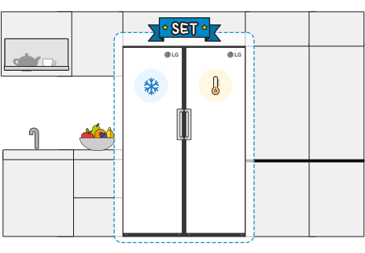
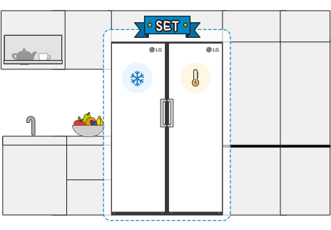
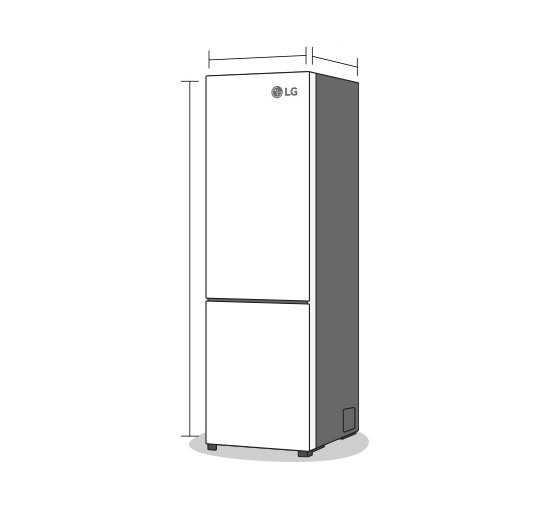
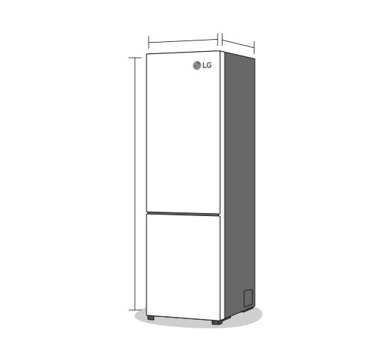

Comodo per le famiglie numerose o per chi usa spesso la zona frigo, facilmente raggiungibile senza chinarti. Chiamato anche frigorifero francese, sta trovando sempre più spazio anche qui in Italia.


Chiamato anche "americano", è sempre più popolare anche qui in Italia. Ha il frigorifero a destra e il congelatore a sinistra e offre tanto spazio per gli alimenti.
È la tipologia più diffusa qui in Italia: il classico frigorifero alto e snello con congelatore in basso, particolarmente indicato per chi fa la spesa più volte nell'arco della settimana.

Più largo e capiente dei frigoriferi combinati tradizionali, è indicato se hai bisogno di tanto spazio per i tuoi cibi, ma non vuoi passare a un modello Side-by-Side o Multidoor.
 

Questi elettrodomestici sono perfetti se vuoi un frigo o un congelatore supplementare per conservare ancora più alimenti. Sono modelli componibili in base alle tue esigenze.


 
